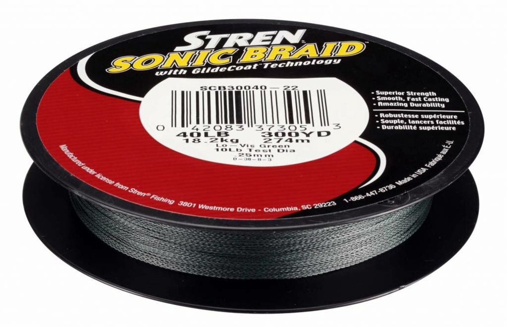

Stren Sonic Braid
Diameter chart, reel capacity & backing guide

This guide covers one readable legacy Sonic Braid label, SCB30040-22: 40 lb Lo-Vis Green, .25 mm and 300 yards. The label also says 10 lb test diameter, but that is a mono-equivalent comparison, not the physical diameter used here. Stren's 2014 US catalog confirms the Sonic Braid and GlideCoat family; the photographed label itself is undated.
- Construction
- Dyneema PE braid with Stren's GlideCoat treatment
- Listed strengths
- 40 lb
- Line type
- Braid main line
Plan a 40 lb braid working section from the actual label
The 40 lb Sonic Braid package covered here is worth evaluating for a casting setup with a rod, lure and cover suited to that strength. Its 300-yard supply can provide one long working section or several shorter fills, depending on the reel. Leave enough braid above any backing for long casts, fish runs and trimming.
How much Sonic Braid will fit?
Calculated estimates, not measured fills. Stop at the reel manufacturer's fill level even if some line remains.
Stren Sonic Braid diameter chart
Undated legacy SCB30040-22 label only: 40 lb / .25 mm / 300 yd / Lo-Vis Green, UPC 042083373053. Inches are converted from mm. The original label is photographed on a retailer host; retailer title/specification prose is excluded. The 2014 US catalog corroborates the family, not the label's date or physical diameter. No other strength/package or later Stren Braid equivalence is claimed.
| Strength | Inches | mm | Spools (yd) |
|---|---|---|---|
| 0.009843 | 0.250 | 300 |
Choosing your Sonic Braid strength
Only the photographed 40 lb label establishes a physical diameter in this review. Other Sonic Braid strengths in historical catalogs do not inherit .25 mm.
Use .25 mm for the capacity input. The adjacent 10 lb test-diameter wording describes a monofilament comparison, not a second strength or measurement.
The supported package is 300 yards of Lo-Vis Green. Its rounded 274 m label is not converted back into a different yardage.
A later spool simply labeled Stren Braid needs its own evidence. A similar fiber or coating description does not establish formulation continuity.
ReelCalc transcribed the readable original label and checked the historical family source. It did not measure this braid or perform knot, abrasion or casting tests.
Want a guided recommendation?
Continue in the Setup WizardSame pound test, different diameters
At your selected strength
Loading diameter comparisons...
What changes with another line?
Nearby diameters in the line database
| Line | Strength | Inches | Difference |
|---|---|---|---|
| Loading line database... | |||
Backing, working line & leaders
Match the complete label
Look for SCB30040-22, 40 lb, .25 mm and 300 yards. The UPC on the reviewed photograph is 042083373053; a shop title or a generic Sonic product picture is not a substitute for that match.
Size the working section
Allow enough braid for the longest expected cast plus reserve for a run, trimming and retying. Use the capacity estimate to choose that section before deciding how much backing is needed.
Prevent spool slip
Follow the reel maker's braid-attachment guidance. Where required, anchor the braid over monofilament backing and keep the connection below the working section.
Check legacy stock before filling
The source does not establish manufacture date or storage condition. Inspect the line and knots, wind evenly under suitable tension, and stop at the reel's specified fill clearance.
How Much Fits on These Reels?
Estimated full-spool capacity for the Sonic Braid strength selected above, with no backing. These are calculated examples, not physical tests or recommendations for every pairing.
Loading capacity estimates...
Sonic Braid questions, answered
Does 10 lb test diameter mean this is 10 lb braid?
No. The original label identifies the braid as 40 lb. Its 10 lb test-diameter phrase is a monofilament comparison; the separate .25 mm entry is the physical diameter used for capacity.
Is this a 2014 diameter chart?
No. The label photograph is undated. The 2014 US Stren catalog independently confirms the Sonic Braid family and construction, but its test/diameter ratios are mono-equivalent pound tests, not a physical-diameter chart.
Why does the linked shop title give different sizes?
That listing mixes a 0.16 mm / 110 m title with images of other Sonic packages. This guide uses only the original SCB30040-22 detail label, where 40 lb, .25 mm and 300 yards are visible together.
Can I use this for another Sonic strength or later Stren Braid?
Not without an exact label or manufacturer chart. Neither matching the brand nor a similar Dyneema description establishes the missing diameter or formulation.
Does a 300-yard package fit my reel?
That depends on the reel's usable capacity at .25 mm and any backing. Choose a working section with enough reserve, calculate the backing, and respect the reel maker's fill clearance.
Specifications & sources
Checked September 13, 2026. Numeric row transcribed visually from the unmodified original spool-label photograph hosted by bol.com. Its 40 lb / .25 mm / 300 yd details conflict with that listing's 0.16 mm / 110 m title, so the title is not used. Stren's original 2014 US catalog, preserved by WesternBass, supplies independent Sonic Braid/GlideCoat family context only.
Calculations use the catalog's listed inch diameters. Published inch and millimeter values may differ slightly because of rounding.
- Original SCB30040-22 spool-label photograph Sole numeric authority: readable original manufacturer label on a retailer host, not a retailer-entered specification chart.
- Photo-host listing and conflicting title Retrieval provenance only. Listing title, stock status and unrelated package images are not used as specifications.
- 2014 original Stren US catalog, page 7 Independent family/construction corroboration. Its mono-equivalent table is not the physical-diameter source and does not date the photographed label.